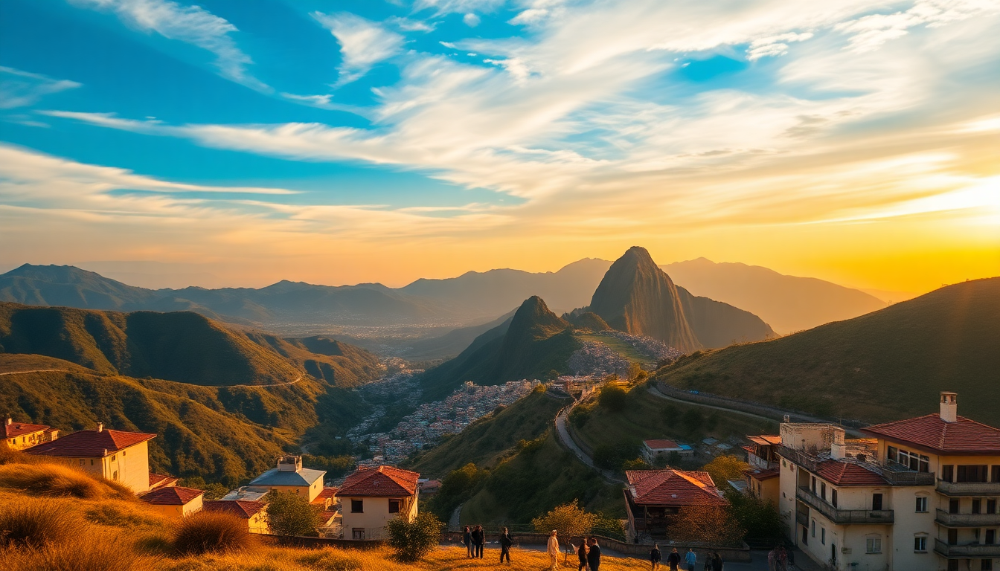

10-Day Peru Itinerary: Lima, Cusco, Sacred Valley & Machu Picchu

I landed in Lima at midnight, tired and skeptical of the 10-day timelines I’d read online. But after running this route myself — Lima’s ceviche counters, Cusco’s cobblestones, the Sacred Valley’s ruins, and that final foggy morning at Machu Picchu — I can tell you it works. Here’s exactly what we did, where we ate, and what I’d skip.
Is 10 days enough for Peru?
Yes, but you have to move fast and pick your battles. We spent 2 days in Lima, 3 in Cusco (with day trips into the Sacred Valley), and 2 at Machu Picchu via Aguas Calientes. That leaves 2 travel days for flights and train connections. It’s tight, but you won’t feel like you’re sprinting — as long as you book the train tickets and entrance permits in advance. The Inca Trail takes 4 days alone, so we skipped it. The train to Machu Picchu is the smarter play for a short trip.
What’s the best way to split time between Lima and Cusco?
Fly. The bus takes over 20 hours, and the road is winding. We booked a morning flight on LATAM from Lima to Cusco — it’s an hour and ten minutes. Spend your first two nights in Lima to adjust to the time zone and altitude (Lima is at sea level), then fly to Cusco. In Lima, we stayed in Miraflores because it’s walkable and safe. We ate at La Mar for ceviche and Isolina for a heavy Peruvian stew — both are solid, but Isolina’s portions are massive, so share.
- Neighborhoods to know: Miraflores (safe, touristy), Barranco (artsy, better nightlife), Centro (historic but sketchy at night)
- Restaurants we liked: La Mar, Isolina, Maido (if you want to splurge on Nikkei)
- Skip: The Larco Museum unless you really like pre-Columbian pottery — it’s well-curated but not essential
How do you handle the altitude in Cusco?
Cusco sits at 3,400 meters (11,200 feet). We felt it immediately — headaches, shortness of breath, and a weirdly light feeling. Our hotel, Casa San Blas Boutique in the San Blas neighborhood, gave us coca tea on arrival. That helped, but the real trick is to take it easy. We walked slowly, drank a lot of water, and avoided alcohol on the first night. By day two, we were fine.
- Altitude tips: Arrive in Cusco by early afternoon, rest for 2-3 hours, then do a light walk to the Plaza de Armas
- Hotels we liked: Casa San Blas Boutique (quiet, great views), Palacio del Inka (luxury, closer to the plaza)
- Don’t take: Altitude pills unless prescribed — coca tea and pacing work for most people
What should you see in the Sacred Valley?
The Sacred Valley is a string of towns and ruins between Cusco and Machu Picchu. We hired a driver for one day (about $60 USD) and hit the highlights. Pisac has the best market — we bought a handwoven blanket for $15 after haggling. Ollantaytambo is the most impressive ruin, with steep terraces that make you feel the Inca engineering. Moray’s circular terraces are cool to see but you’ll be done in 15 minutes. We skipped Chinchero because our driver said it’s mostly souvenir stalls now.
- Must-see spots: Pisac ruins and market (morning), Ollantaytambo fortress (afternoon), Moray (quick stop)
- Lunch spot: In Ollantaytambo, we ate at El Albergue — simple, local, and they grow their own vegetables
- Transport tip: The train to Machu Picchu leaves from Ollantaytambo station, not Cusco. So we stayed one night in Ollantaytambo to catch the 6 AM train.
How do you book Machu Picchu without getting scammed?
We bought the entrance ticket directly from the official government site (tuboleto.cultura.pe) two months in advance. The train ticket we booked through PeruRail — the Voyager class was fine, clean seats, and they gave us a snack. Don’t buy the “Machu Picchu + Huayna Picchu” combo unless you’re a strong hiker. We just did the classic circuit (Route 2) and it took about 2.5 hours. The fog lifted around 10 AM, and the view from the Guardhouse is the one you see in photos.
- Ticket tips: Buy entrance tickets at least 6 weeks ahead; they sell out. Choose the 8 AM or 9 AM slot.
- Train options: PeruRail (from Ollantaytambo) or Inca Rail (from Poroy). We used PeruRail — no complaints.
- Stay in: Aguas Calientes. We booked Hotel Machu Picchu Inn — basic but clean, and a 5-minute walk to the bus station.
- Don’t: Hire a guide at the gate — you can rent an audio guide for $10 inside, and the paths are well-marked
What’s the best time of year for this itinerary?
May through September is dry season. We went in late May — cool mornings, sunny afternoons, almost no rain. The downside is crowds. Machu Picchu had about 2,500 visitors that day, which felt manageable. December through March is rainy, and the Inca Trail closes in February. If you’re flexible, aim for April or October for shoulder-season weather and thinner crowds. January was a washout for a friend who went last year.
FAQ
Do I need a visa for Peru? No, if you’re from the US, Canada, UK, Australia, or most EU countries. You get 90 days on arrival. Just show your passport at immigration.
Is it safe to walk around Cusco and Lima at night? Cusco’s Plaza de Armas and San Blas are safe after dark — we walked back from dinner at 10 PM without issues. In Lima, stick to Miraflores and Barranco after dark. Avoid Centro at night, and don’t flash expensive cameras or phones.
How much money should I budget for 10 days? We spent about $1,200 per person including flights, hotels, meals, and entrance fees. The biggest single expense was the train to Machu Picchu ($65 one-way). Street food is cheap — a ceviche at a market stall in Lima costs $4. Sit-down dinners in Cusco run $12-18 per person.
Conclusion
- Fly between Lima and Cusco — don’t waste a day on the bus
- Book Machu Picchu tickets and train 2 months ahead
- Stay in Ollantaytambo the night before your train to Machu Picchu
- Skip Huayna Picchu unless you’re a fit hiker — the classic circuit is enough
- Carry cash for markets and small restaurants; cards work in hotels and big restaurants